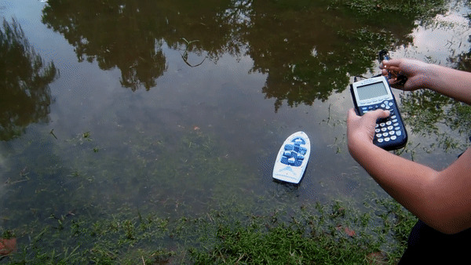
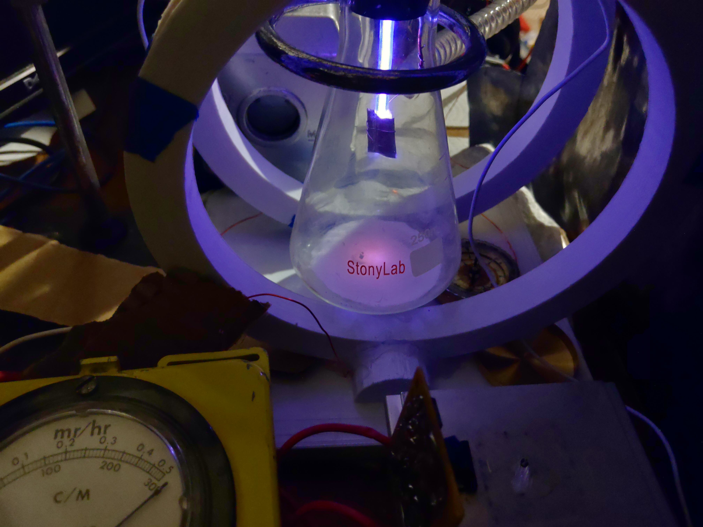

A website where I list my projects, interests, and goals.
Calculator Controlled Boat
Controls an RC Boat with a graphing calculator, 'cause why not? This project was created for a competition at cemetech.net using a library called ArTICL.
Homemade Cathode Ray Tube
Shoots an electron beam at a phosphor screen to make it glow. Explored magnetic deflection of charged particles. This was my final project for my physics class.